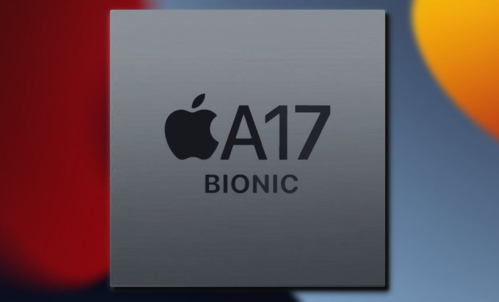
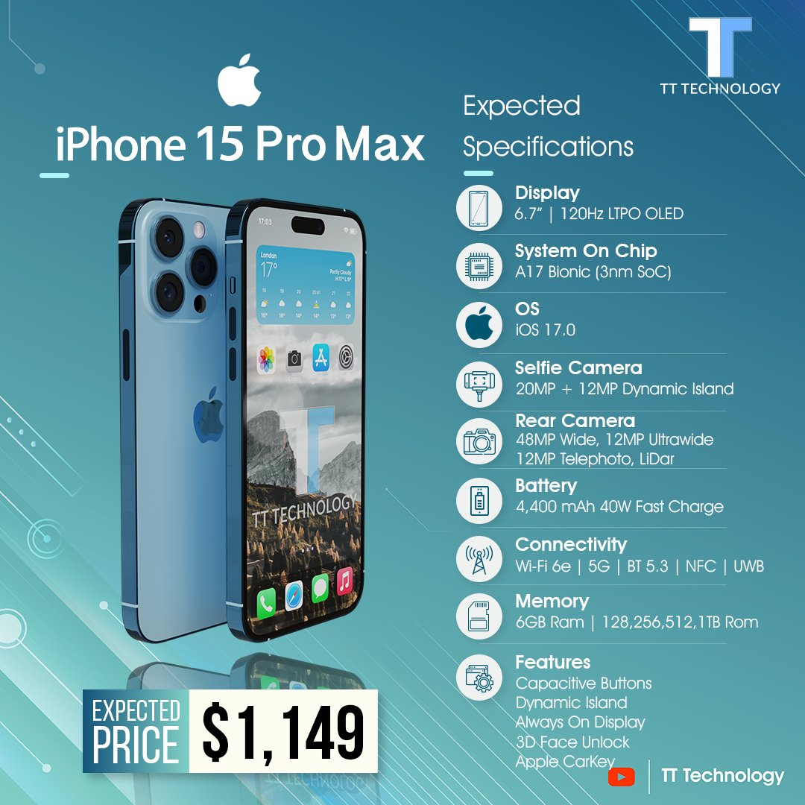
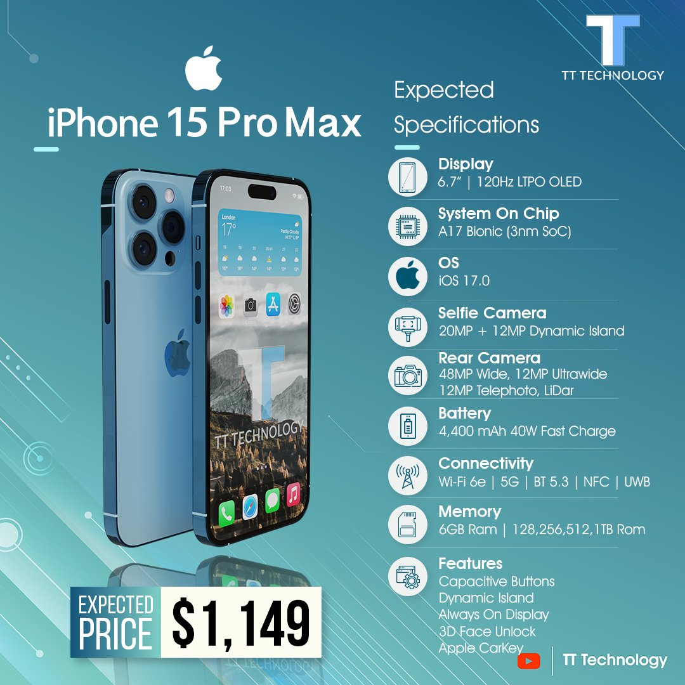
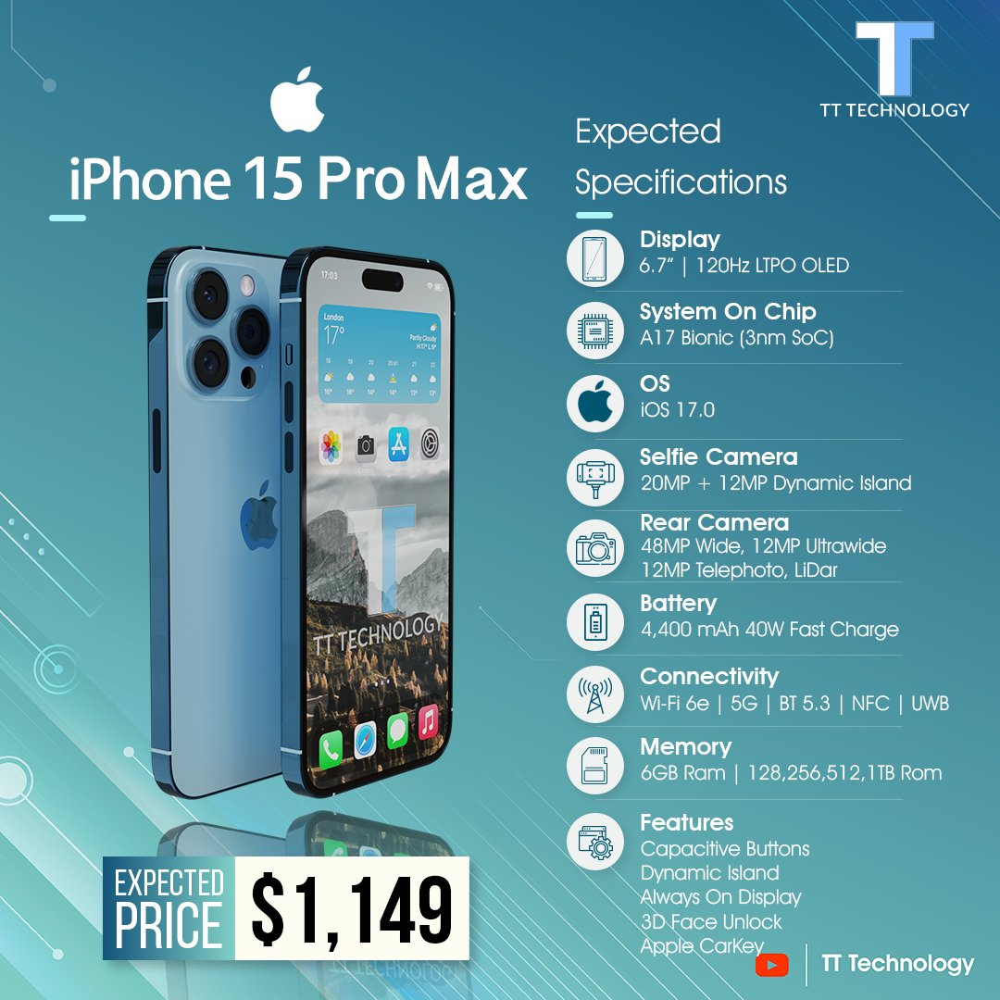

A Beautiful and Durable Design with Amazing Battery Life
Available in the popular 6.1-inch size and a stunning new 6.7-inch size,2 iPhone 15 and iPhone 15 Plus feature a durable and sleek aerospace-grade aluminium design in five beautiful finishes. The larger display of iPhone 15 Plus is great for streaming movies and playing games, and iPhone 15 Plus boasts the best battery life ever in an iPhone.3 Both models have an updated internal design for better thermal performance, gorgeous Super Retina XDR displays with OLED technology that supports 1200 nits of peak HDR brightness, a 2,000,000:1 contrast ratio, and Dolby Vision. iPhone 15 and iPhone 15 Plus also feature the durable Ceramic Shield front cover — exclusive to iPhone and tougher than any other smartphone glass — and are protected from common spills and accidents with water and dust resistance.4
iPhone 15 and iPhone 15 Plus are shown in midnight.
iPhone 15 and iPhone 15 Plus are shown in blue.
iPhone 15 and iPhone 15 Plus are shown in starlight.
Introducing new IOS A17 Bionic chip

I phone 15 Specifications:

I Phone and the Environment
iPhone 15 and iPhone 15 Plus are designed to minimise their impact on the environment, including antenna lines that use upcycled plastic water bottles that have been chemically transformed into a stronger, higher-performance material. iPhone 14 models also use 100 percent recycled rare earth elements in all magnets, including those used in MagSafe, and 100 percent recycled tungsten in the Taptic Engine. Both models also include 100 percent recycled tin in the solder of multiple printed circuit boards, and 100 percent recycled gold in the plating of multiple printed circuit boards and in the wire of all cameras. Fiber-based packaging does not use outer plastic wrap, bringing Apple closer to its goal of completely removing plastic from all packaging by 2025.
Today, Apple is carbon neutral for global corporate operations, and by 2030, plans to be 100 percent carbon neutral across its entire manufacturing supply chain and all product life cycles. This means that every Apple device sold, from component manufacturing, assembly, transport, customer use, charging, all the way through recycling and material recovery, will have net-zero climate impact.
Pricing and Availability
iPhone 15 and iPhone 15 Plus will be available in midnight, blue, starlight, purple, and (PRODUCT)RED in 128GB, 256GB, and 512GB storage capacities.
Customers in Australia, Canada, China, France, Germany, India, Italy, Japan, Singapore, Spain, Thailand, the UAE, the UK, the US, and more than 30 other countries and regions will be able to pre-order iPhone 15 and iPhone 15 Plus beginning at 5 a.m. PDT on Friday, September 9, with iPhone 14 availability beginning Friday, September 16, and iPhone 14 Plus beginning Friday, October 7.
iPhone 15 will be available in Malaysia, Türkiye, and 20 other countries and regions beginning Friday, September 23.
Emergency SOS via satellite will be available starting in the US and Canada in November, and the service will be included for free for two years with the activation of iPhone 15 and iPhone 15 Plus.
iPhone 15 and iPhone 15 Plus are also available through Apple Authorised Resellers.12
Customers can get iPhone 15 for INR 79900 and and iPhone 15 Plus for INR 89900 from apple.com/in/store and through Apple Authorised Resellers.
iOS 16 will be available as a free software update on Monday, September 12.
Customers who purchase iPhone 15 and iPhone 15 Plus will receive three free months of Apple Arcade with a new subscription.
Leather Wallet with MagSafe and iPhone 15 and iPhone 15 Plus Leather Cases will be available in five new colors: midnight, forest green, ink, umber, and orange. iPhone 15 and iPhone 15 Plus Clear Case and Silicone Cases will be available in midnight, storm blue, red, chalk pink, lilac, elderberry, succulent, and sunglow.
OUR I STORE LOCATION
About Apple
Apple revolutionised personal technology with the introduction of the Macintosh in 1984. Today, Apple leads the world in innovation with iPhone, iPad, Mac, Apple Watch, and Apple TV. Apple’s five software platforms — iOS, iPadOS, macOS, watchOS, and tvOS — provide seamless experiences across all Apple devices and empower people with breakthrough services including the App Store, Apple Music, Apple Pay, and iCloud. Apple’s more than 100,000 employees are dedicated to making the best products on earth, and to leaving the world better than we found iApple revolutionised personal technology with the introduction of the Macintosh in 1984. Today, Apple leads the world in innovation with iPhone, iPad, Mac, Apple Watch, and Apple TV. Apple’s five software platforms — iOS, iPadOS, macOS, watchOS, and tvOS — provide seamless experiences across all Apple devices and empower people with breakthrough services including the App Store, Apple Music, Apple Pay, and iCloud. Apple’s more than 100,000 employees are dedicated to making the best products on earth, and to leaving the world better than we found i
Every iPhone 15 and iPhone 15 Plus (PRODUCT)RED purchase now contributes directly to the Global Fund to combat pandemics like COVID‑19 and AIDS.
The display has rounded corners that follow a beautiful curved design, and these corners are within a standard rectangle. When measured as a standard rectangular shape, the screen is 6.06 inches (iPhone 15), or 6.68 inches (iPhone 15 Plus) diagonally. The actual viewable area is smaller.
All battery claims depend on the cellular network, location, signal strength, feature configuration, usage, and many other factors; actual results will vary. The battery has limited recharge cycles and may eventually need to be replaced. Battery life and charge cycles vary by use and settings. Battery tests are conducted using specific iPhone units. See apple.com/in/batteries and apple.com/in/iphone/compare for more information.
iPhone 15 and iPhone 15 Plus are splash-, water-, and dust-resistant, were tested under controlled laboratory conditions, and have a rating of IP68 under IEC standard 60529 (maximum depth of 6 meters for up to 30 minutes). Splash, water, and dust resistance are not permanent conditions. Resistance might decrease as a result of normal wear. Do not attempt to charge a wet iPhone; refer to the user guide for cleaning and drying instructions. Liquid damage is not covered under warranty.
The microphone is turned on only when driving is detected; this can be triggered by Bluetooth, CarPlay, or speed. All data is processed on the device and discarded after a crash event has been detected, unless a user has opted into sharing their data to improve Crash Detection. Only the sound level is shared with Apple, not the raw audio.
Crash Detection is designed for four-wheel passenger vehicle crashes with certain mass, G-force, and speed profiles consistent with severe, life-threatening crashes. It was designed for severe, life-threatening, high-impact front and rear, side-swipe, T-bone, and rollover crashes. Crash Detection is available worldwide on iPhone 15, iPhone 15Plus, iPhone 15 Pro, iPhone 15 Pro Max, Apple Watch Series 8, Apple Watch SE, and Apple Watch Ultra.
Emergency SOS via satellite was designed for use in open spaces with a clear line of sight to the sky. Performance may be impacted by obstructions such as trees or surrounding buildings. iPhone will continue to operate under normal temperature conditions.
A data plan is required. 5G, Gigabit LTE, VoLTE, and Wi-Fi calling are available in select markets and through select carriers. Speeds are based on theoretical throughput, and vary based on site conditions and carrier. For details on 5G and LTE support, customers can contact their carrier or visit apple.com/in/iphone/cellular.
Users can edit a message for up to 15 minutes after sending it and can unsend a message for up to two minutes after sending it. Users can make up to five edits to a given message, and recipients will be able to see a record of edits made to the message.
Dual-camera system upgrades and features include:
A new Main camera with a larger ƒ/1.5 aperture and 1.9 µm pixels, enabling photo and video improvements in all lighting scenarios for better detail and motion freezing, less noise, faster exposure times, and sensor-shift optical image stabilisation.
A new front TrueDepth camera with an ƒ/1.9 aperture that enables better low-light performance for photos and video.
A new Action mode for incredibly smooth-looking video that adjusts to significant shakes, motion, and vibrations, even when video is being captured in the middle of the action.
The Ultra Wide camera, offering a unique perspective for wider shots and improvements to low-light photos with Photonic Engine.
An improved True Tone flash that is 10 percent brighter and has better uniformity for more consistent lighting.
Cinematic mode, now available in 4K at 30 fps and 4K at 24 fps.
End-to-end Dolby Vision HDR, available only on iPhone.
My Support
Get up-to-date information about your Apple products including cover, repairs and much more.

.png)

 
.png)

.png)